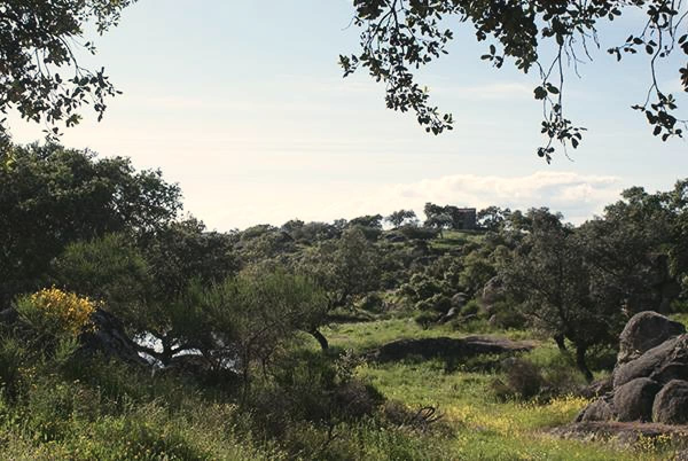
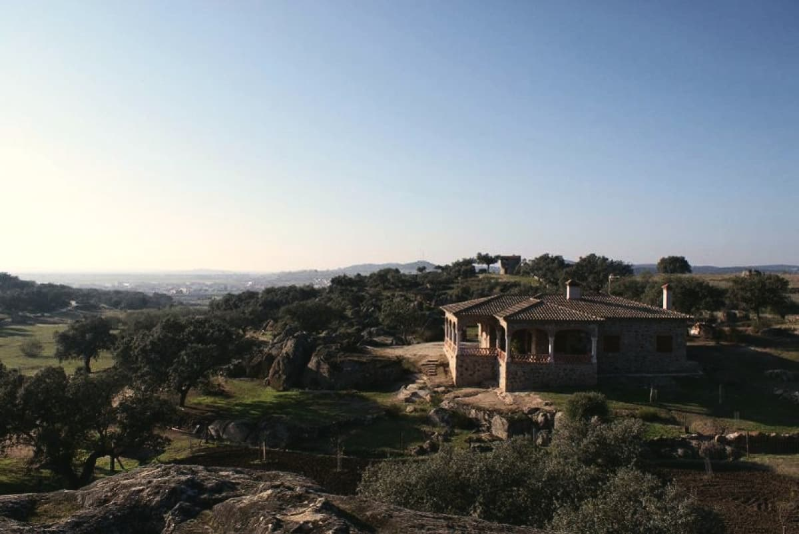
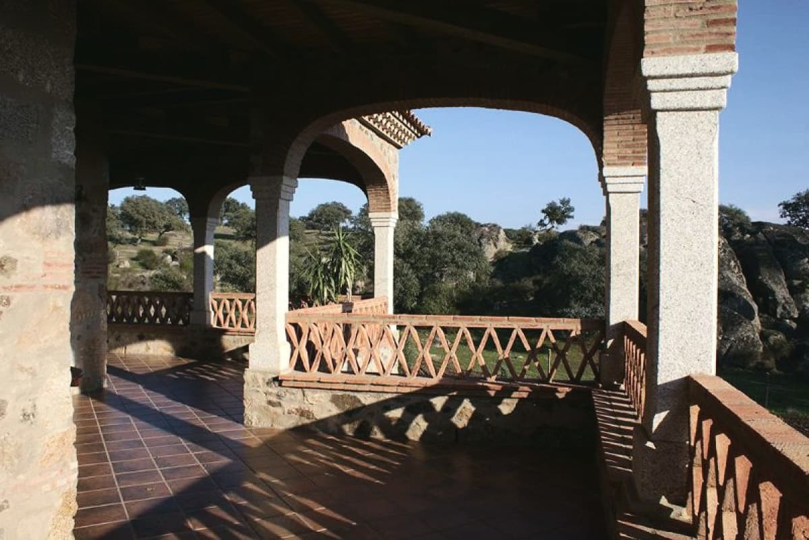
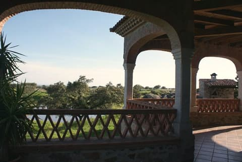
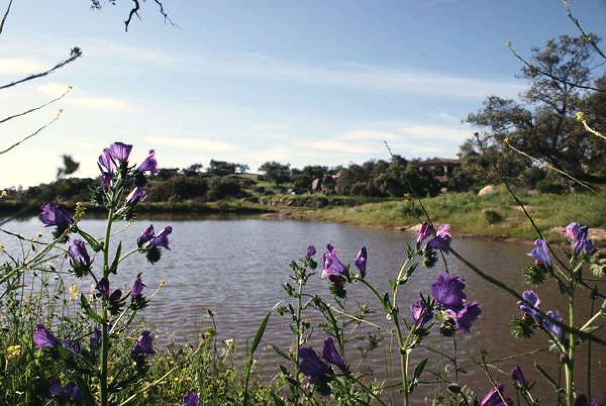
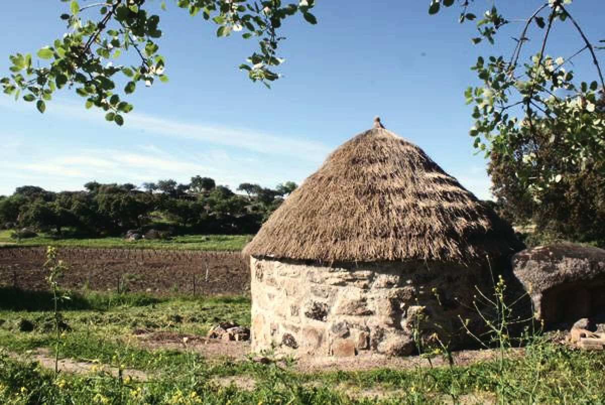
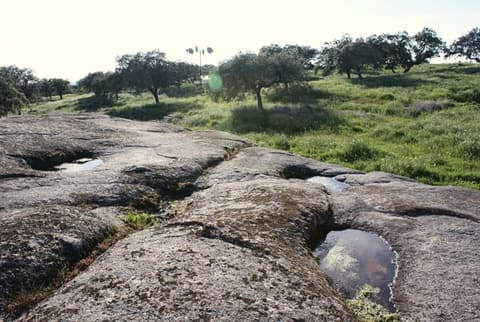
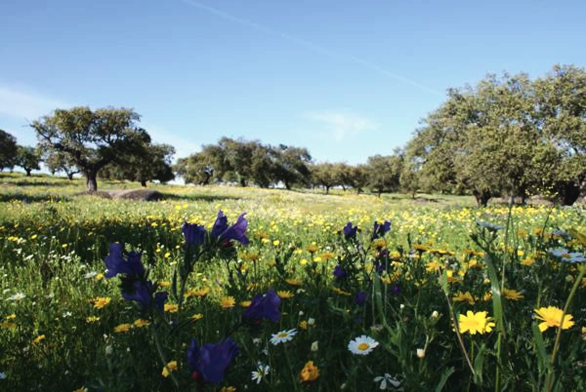
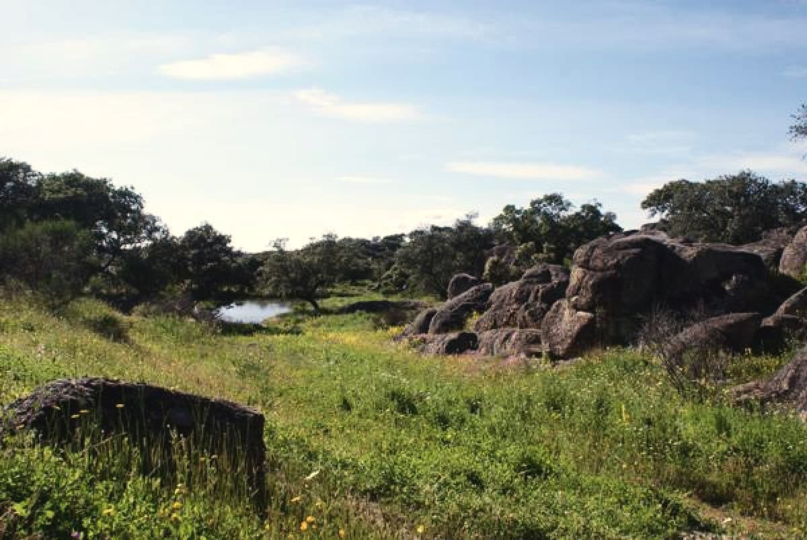

01
Encinas y granito
Grandes bolos de granito entre las encinas, alrededor de la casa. Es la dehesa de esta tierra, con la hierba verde en invierno y dorada en verano.
A.R. Molino de Viento · alojamiento rural

La casa
Arquitectura popular, levantada entera en piedra intentando no alterar el entorno. Dentro, cuatro dormitorios dobles (dos con camas separadas y dos de matrimonio), dos baños completos, un salón comedor amplio con chimenea y la cocina con todo su equipo. Fuera, la barbacoa y un porche grande de ocho arcos sobre columnas de granito.
Se alquila la casa entera, para vosotros solos, y se paga por persona.

Ocho arcos
Pulsad cada uno para ver sus fotos.
Todas las fotos
Del saliente al poniente
Por la mañana el sol sale por un extremo del porche; por la tarde se pone por el otro.
Saliente
Poniente

«Un gran porche de ocho arcos apoyados en columnas de granito, orientado al saliente y el poniente, desde donde podrá disfrutar de una magnífica puesta de sol.»
La finca
Así se llama el paraje donde está la casa: encinas y grandes rocas de granito, con sitio de sobra para andar y ver la fauna del lugar.

Grandes bolos de granito entre las encinas, alrededor de la casa. Es la dehesa de esta tierra, con la hierba verde en invierno y dorada en verano.

Una charca dentro de la finca, rodeada de encinas. En primavera se llena de flores moradas en la orilla.

Un chozo redondo de piedra con el techo de paja, como los que se levantaban en la dehesa.

La roca forma pilas naturales que guardan el agua de la lluvia.

Cuando llega, la pradera se cubre de flores amarillas y lirios morados entre las encinas.

Conejos, abejarucos, rabilargos, mirlos y tórtolas: los que suelen dejarse ver al pasear por la finca.
«Los más viejos del lugar dicen que ni sus abuelos lo vieron funcionar.»
En la finca hay un molino de viento, se cree que del siglo XV, que da nombre a la casa. Hoy se usa como almacén, y desde allí se ven unas vistas panorámicas de la dehesa.
Lo que hay
Lo que cuentan su web y su ficha. Si echáis algo en falta, preguntad al reservar.
Alrededores
La Roca de la Sierra extiende su caserío en un llano rodeado de sierrillas bajas, justo donde la sierra de San Pedro da paso a las vegas del Guadiana.
Opiniones
4,5★ en Google, con 20 reseñas
10«Excepcional» en TusCasasRurales
«La casa es espectacular, completa, muy cómoda y la decoración con buen gusto, con chimenea y aire acondicionado en todas las habitaciones y salón. El entorno espectacular rodeado de naturaleza.»Opinión en TusCasasRurales
«Un lugar precioso para desconectar.»En Google
«Casa rústica muy bien equipada, los dormitorios muy cómodos, todo muy limpio, una gran chimenea, menaje muy completo, los exteriores con barbacoa y porche, el entorno es de cine y los anfitriones de diez […] repetiremos.»Opinión en TusCasasRurales
«Buen lugar de vacaciones.»En Google
| Limpieza | 10 |
|---|---|
| Calidad-precio | 10 |
| Confort | 10 |
| Propietario | 10 |
| Instalaciones | 10 |
| Ubicación | 10 |
Tarifas y condiciones
Consultar fechas
Rellenad lo básico y os preparamos el mensaje para llamar, mandar un SMS o un correo. Nada se envía desde esta página.
Vuestro mensaje
WhatsApp, en cuanto la casa lo confirme. Fijo: 924 406 375.
Cómo llegar
C. Vasco Núñez de Balboa, 2
06190 La Roca de la Sierra (Badajoz)
924 406 375 · fijo
676 516 272 · móvil
Versión
Dos versiones de la misma web. Lo marcado «solo TCR» sale solo en TusCasasRurales.
Plazas por confirmar: 8 en TusCasasRurales, 8-10 en su web.
Precio por confirmar: 33 € por persona y noche (su web y la ficha de 2026).